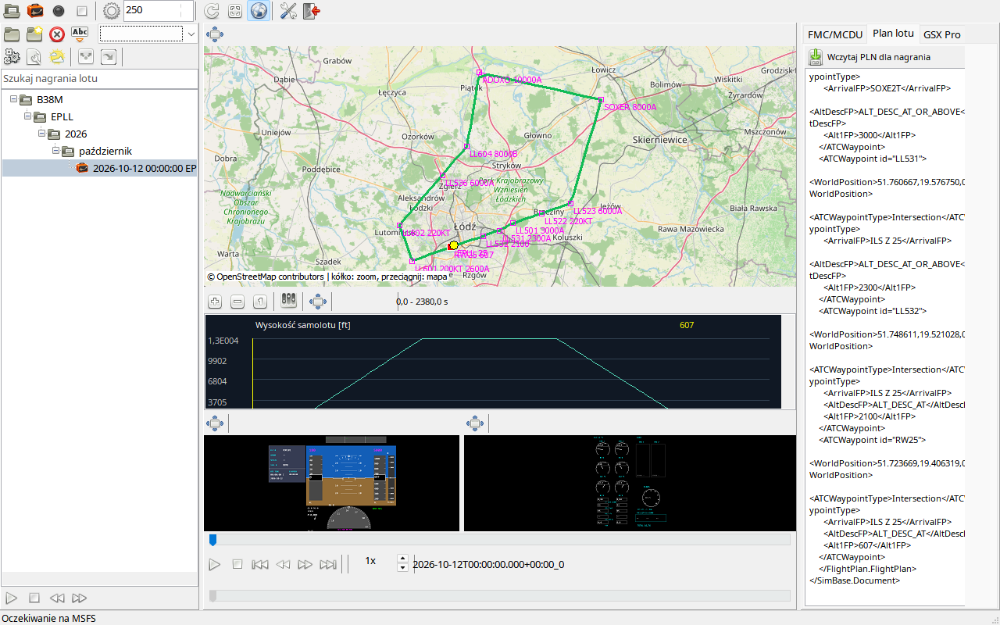

Zacznij od wyboru zadania: nowe nagranie wymaga uruchomionego MSFS 2024, natomiast analizê pliku mo¿na prowadziæ offline. Po wypakowaniu zachowaj strukturê katalogów paczki. Uruchom MSFS24-FDR.exe, wybierz jêzyk i sprawdŸ pasek stanu. W symulatorze wczytaj samolot i zakoñcz ekran przygotowania przyciskiem Ready for flight. Dopiero wtedy oczekuj aktywnego nagrywania.
Do pierwszego odtwarzania wybierz zakoñczone nagranie z drzewa po lewej. Powiêksz interesuj¹c¹ ramkê lub wypnij j¹ do osobnego okna, ustaw kursor czasu i porównuj te same chwile na mapie, PFD oraz w danych. W tej instrukcji planowane trasy i OFP przedstawiaj¹ zanonimizowan¹ pêtlê EPLL.25 ADOX2W SOXE2T LL501 ILSZ.25 EPLL.25. Telemetria ilustracyjna jest syntetyczna, a nie dowodem wykonania tego lotu.
MSFS24-FDR nagrywa i odtwarza dane Microsoft Flight Simulator 2024. MSFS 2020, FSX i Prepar3D nie s¹ obs³ugiwane. Przyrz¹dy s³u¿¹ analizie nagrania, nie sterowaniu symulatorem.
| Opcja / czynnoœæ | Dzia³anie i ograniczenia |
|---|---|
| Pierwsze nagranie | Wypakuj ca³y pakiet Win64 portable, uruchom EXE, wczytaj lot w MSFS 2024 i wybierz Ready for flight. Zaczekaj na po³¹czenie przed rêcznym lub automatycznym nagrywaniem. |
| Pierwsze odtworzenie | Wybierz ukoñczony lot z biblioteki. Mapa, wykresy, instrumenty i zak³adki danych maj¹ wspólny czas. U¿yj odtwarzania, suwaka lub przycisków pocz¹tku/koñca. |
| Dane u¿ytkownika | Ustawienia, indeks, nagrania i logi s¹ w %LocalAppData%\MSFS24-FDR. Kopiuj zapasowo ca³y katalog razem z Recordings. Wymiana plików programu nie wymaga usuwania danych. |
| Praca offline | Zapisana telemetria, plany, komunikaty i mapy SimBrief dzia³aj¹ bez MSFS. Nowe kafelki mapy, pobieranie pogody/SimBrief i chmurowa AI wymagaj¹ odpowiednich us³ug sieciowych. |
| Pomoc | F1 otwiera temat aktywnego panelu. Korzystaj z drzewa rozdzia³ów i wyszukiwania CHM. Dla pozosta³ych jêzyków interfejsu u¿ywana jest pomoc angielska. |
